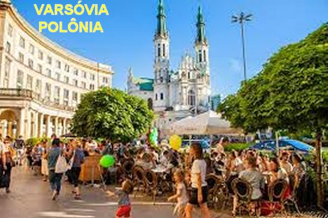
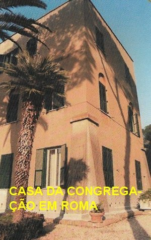
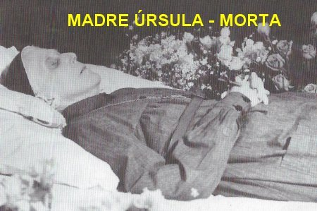
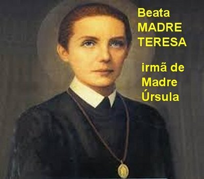
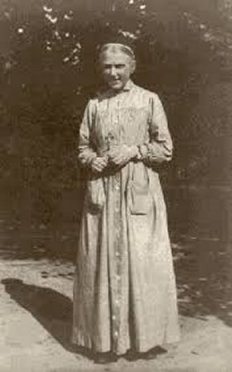
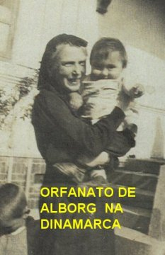
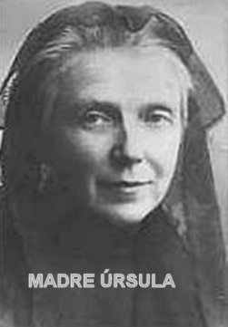
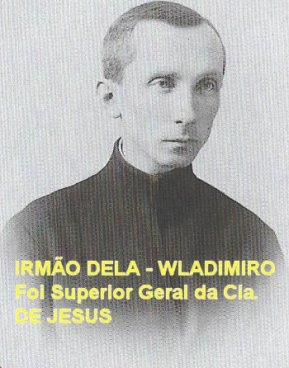

"MISSÃO EXISTENCIAL REALIZADA DIGNAMENTE"

NOVAS CASAS E VIAGENS
No ano de 1924, Madre Úrsula abriu Casas em Vilnius e em Varsóvia. E no ano seguinte, concordando com a valorização das organizações de ajuda catequética e de educação religiosa, trouxe da França a “Cruzada Eucarística”. Para os membros e animadores da Cruzada, as Irmãs começaram a editar a Revista “Hóstia” e “Oredowniczek Eucharystyczny”, que continha numerosos artigos e várias publicações para crianças.
No ano 1926, fez muitas viagens pela Polônia, em virtude do nascimento de novas Comunidades Ursulinas, assim como, visitas e apoio as Casas já existentes. Madre Úrsula também viajou a Roma para uma audiência com o Papa Pio XI. Fez um admirável discurso no Congresso Católico realizado em Varsóvia no dia 28 de Agosto. E com alegria inaugurou uma gráfica própria na Casa de Pniewy, onde também teve o prazer de receber a visita do Primaz da Polônia Dom August Hlond.
EDUCAR PARA O AMOR
Madre Úrsula educava suas religiosas para amar a DEUS sobre todas as coisas, e em DEUS e por DEUS, amar todas as pessoas humanas e toda a criação. Recomendava como testemunho, para que todos cressem da sua estreita e apaixonada relação pessoal com CRISTO, seguindo a vida com serenidade espiritual, com o sorriso nos lábios, e uma preciosa humildade, alcançando a capacidade de viver o quotidiano, como um caminho privilegiado para a santidade. Ela mesma era um exemplo notável desse tipo de vida.
TRABALHOS E VISITAS NO EXTERIOR
Em Março de 1927 viajou para a França com a perspectiva de abrir nova frente de trabalho. Também visitou várias instituições e Obras Ursulinas na Bélgica e na Alemanha. E no dia 29 de Setembro, o Corpo do falecido Cardeal Mieczyslaw Ledóchowska, tio de Madre Úrsula, que estava sepultado em Roma, foi transladado depois de 25 anos da sua morte, e depositado na Catedral de Poznán, na Polônia.
CASA GERAL EM ROMA

CASAS E OBRAS NA FRANÇA E ITÁLIA - E CONDECORAÇÕES
Em 1930, as primeiras “Ursulinas Cinzentas”,como eram denominadas pela cor do traje, se estabeleceram na França e assumiram o trabalho, juntamente com jovens polonesas, na Fábrica de Seda. Madre Úrsula fundou numerosos centros de educação e de ensino; também enviava as religiosas para fazer a Catequese e a trabalhar em zonas pobres; organizava edições de livros para crianças e jovens; ela mesma escrevia os artigos e montava os livros. Assumiu o objetivo de iniciar e apoiar organizações eclesiais para meninos (Movimento Eucarístico), para a juventude em geral e para as mulheres. Participava ativamente na vida da Igreja no país. E por isso mesmo, recebeu Condecorações Estatais e Eclesiásticas. Em Novembro de 1930, aconteceu a aprovação definitiva das Constituições da “Congregação das Irmãs Ursulinas do Coração de JESUS Agonizante”. Em Dezembro Madre Úrsula recebeu outra condecoração “A Cruz da Independência”. Em 1931, no mês de Outubro, foi condecorada com a “Cruz Pro Fide et Ecclesia in Russia Merito” – pelo trabalho no campo da Fé e da Igreja, na Rússia.
De 1932-1933, implantou novas Comunidades Religiosas na França e na Itália, para onde empreendeu diversas viagens. Em Outubro de 1933, organizou a palestra do Monsenhor Giovanni Montini (futuro Papa Paulo VI) na Casa Acadêmica, dirigida pelas Irmãs Ursulinas, em Roma. Em Dezembro de 1933, teve um sério problema de saúde, sofrendo uma grave pneumonia. Ficou muitos meses em tratamento e depois em recuperação.
SEGUNDO CAPÍTULO DA CONGREGAÇÃO
Em Julho de 1935, aconteceu o II Capítulo Geral da Congregação em Pniewy, que elegeu Madre Úrsula Superiora-Geral por mais seis anos. Em Abril de 1937 comemorou o seu Jubileu de Ouro, 50 anos de vida religiosa.
Madre Úrsula sempre teve a amizade e os conselhos do seu tio Mieczyslaw, que exerceu grande influência sobre a sua vida. Ele era Arcebispo de Gniezno-Poznan, primado da Polônia e depois, também se tornou Prefeito da Sagrada Congregação para a propagação da Fé, no Vaticano.
Entre os anos 1937 e 1938 ela escreveu a “Crônica da CONGREGAÇÃO”, um minucioso histórico dos fatos mais importantes que ocorreram. E no final do livro, deixou um precioso conselho para as Irmãs,as suas queridas filhas: “A CONGREGAÇÃO veio à luz por Vontade de DEUS. Foi ELE quem a dirigiu. O meu papel, na história da CONGREGAÇÃO, foi o de ser uma peça de xadrez, que o SENHOR dirigia como melhor LHE convinha. Nossa CONGREGAÇÃO é Obra de DEUS e por isso devemos amá-la, valorizá-la, servi-la sempre e em todo lugar com dedicação e com amor. Servindo-a, estamos servindo a DEUS nosso eterno SENHOR e REI”.
ÚLTIMAS VIAGENS
Em Janeiro e Fevereiro de 1939, visitou as diversas Comunidades da Congregação na Polônia, especialmente Kresy, Lódz e em Varsóvia. E no dia 3 do mês de Maio de 1939, fez sua última viagem a Roma.
MORTE DE MADRE ÚRSULA
Nos dias 18-19 de Maio de 1939, teve
outro problema sério de saúde. Foi internada no Hospital em Roma, onde realizou todos
os exames, que apresentaram 
No dia 1º de Junho de 1939 aconteceu a cerimônia funeral na Basílica de NOSSA SENHORA DOS ANJOS e o sepultamento do corpo no túmulo da Congregação, no Cemitério de Campo Verano.
Entre 1949-1957, em Roma, Cracóvia e Vierie (França), começaram as pesquisas e os processos informativos sobre a Serva de DEUS.
Em Abril de 1959 a exumação atestou que o corpo não sofreu decomposição. Foi lavado e depositado em novo hábito, num caixão novo, e permaneceu por um período no túmulo do Cemitério de Campo Verano. Dia 2 de Dezembro foi transladado o corpo da Serva de DEUS para a Capela da Casa Geral da Congregação, na via Del Casaletto, 557, em Roma.
Entre 1971-1972, em face da cura milagrosa de Jan Kolodziejski, realizou-se na Cúria Diocesana, em Cracóvia, o processo apostólico sob a presidência do Cardeal Karol Wojtyla (futuro Papa João Paulo II).
Em 1973-1974, diante da cura milagrosa da Irmã Danuta Pawlak, realizou-se na Cúria Diocesana em Cracóvia, do mesmo modo, o processo apostólico, também presidido pelo Cardeal Karol Wojtyla.
Em 19 de Outubro de 1975, foi realizada a Beatificação de Maria Teresa Ledóchowska Irmã mais velha de Úrsula Maria (Madre Úrsula).
BEATIFICAÇÃO E CANONIZAÇÃO
No dia 14 de Maio de 1983, a Sagrada Congregação para as Causas dos Santos proclamou o decreto sobre o heroísmo das virtudes da serva de DEUS (Úrsula Maria). No dia 9 de Junho do mesmo ano, a Sagrada Congregação proclamou o decreto sobre a veracidade das curas milagrosas ocorridas por intercessão de Úrsula Maria Ledóchowska. No dia 20 de Junho de 1983, a “BEATIFICAÇÃO” foi realizada pelo Papa João Paulo II, na cidade polonesa de Poznán.
Dia 25 de Outubro de 1988 foi feita outra exumação do corpo de Úrsula, que se encontrava na Capela da Casa Geral da Congregação, em Roma; isto, em face da possibilidade da transladação do corpo para Pniewy, na Polônia.
Do dia 11 ao dia 29 de Maio de 1989, o corpo preservado na sua totalidade, é transladado de Roma para a Polônia, e foi depositado na Capela da Casa-Mãe das Ursulinas Cinzentas, em Pniewy. Muitas homenagens aconteceram em todo o trajeto da viagem desde a Itália, passando pela Áustria, Slováchia e várias cidades da Polônia.
No dia 2 de Agosto de 1996, aconteceu outra intervenção milagrosa da bem-aventurada Úrsula Ledóchowska, em Ozarów (perto de Varsóvia). Daniel Gajewski, um menino de 14 anos foi eletrocutado. Seus pais desesperados rezaram e imploraram a intercessão de Úrsula junto a DEUS, para salvar a criança. E o milagre aconteceu.
No dia 23 de Abril de 2002, a Igreja proclamou o decreto da Congregação para a Causa dos Santos, reconhecendo o milagre. Assim terminou o processo de Canonização. No dia 29 de Maio de 2003, no Vaticano, em Roma, Úrsula Maria Ledóchowska foi “CANONIZADA” pelo Papa João Paulo II.
A IGREJA faz memória litúrgica de SANTA ÚRSULA LEDÓCHOWSKA, anualmente no dia 29 de Maio.




